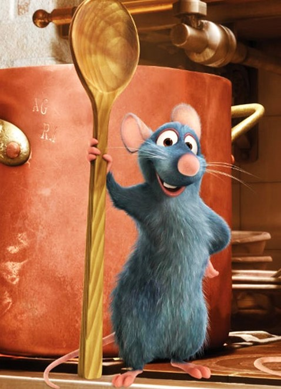
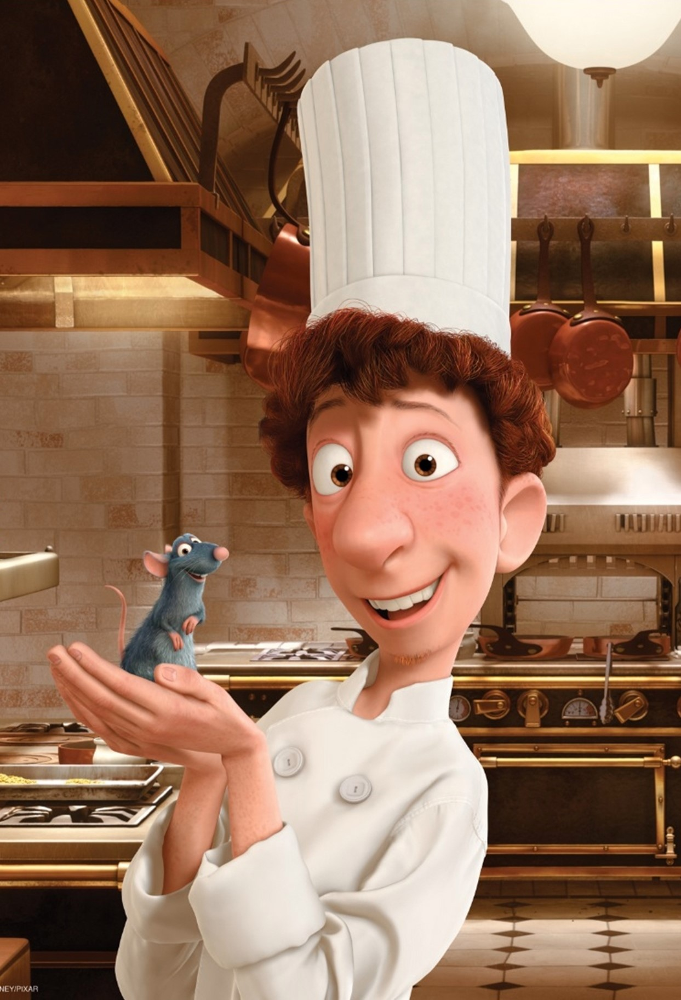
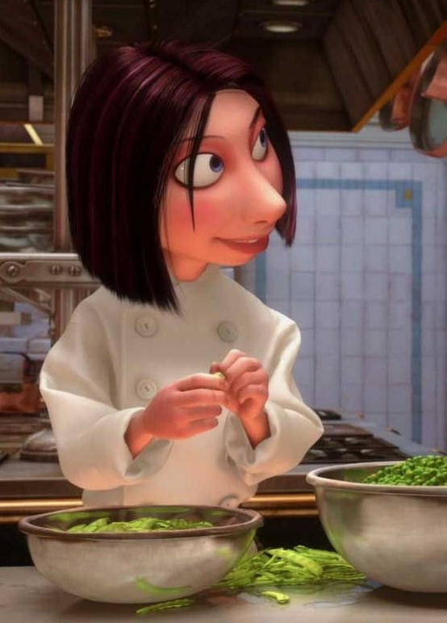
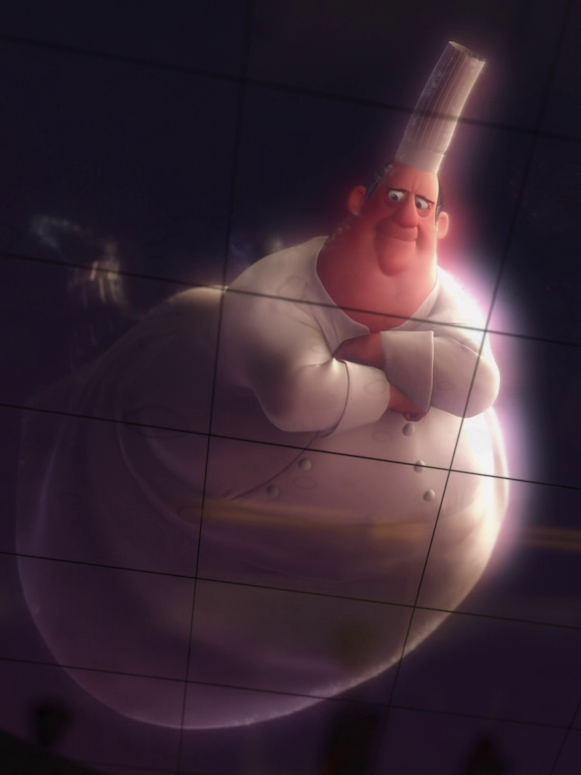
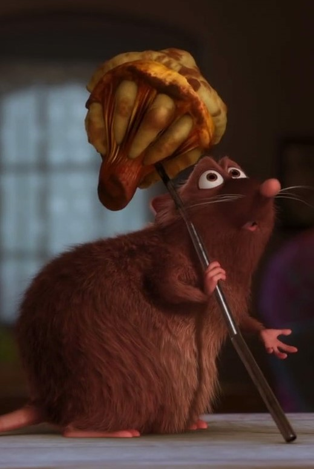
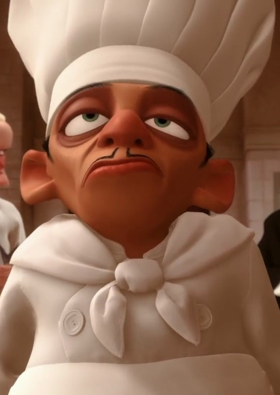
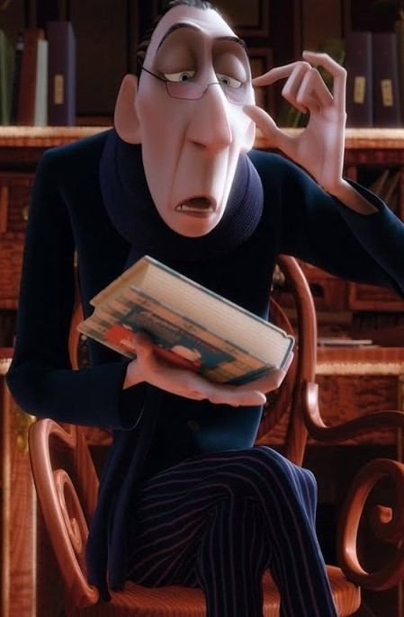

Крыс по имени Реми обожает готовить и обладает удивительными способностями в этом деле, но другие крысы — его сородичи, — разумеется, не разделяют его увлечений и считают, что он занимается ерундой. Однажды Реми попадает на кухню в настоящий французский ресторан, где ему выпадает возможность по-настоящему проверить свои способности и приготовить любимое блюдо, параллельно помогая юноше по имени Лингвини. Восьмой мультфильм анимационной студии Pixar стал обладателем «Оскара» в 2008 году.
Персонажи

Реми Реми очень любит продукты приготовленные качественно и со вкусом. Именно благодаря этому его друг - Огюст Гюсто, а точнее его спектральная форма. Так же у него необычайное обоняние, поэтому его отец Джанго доверяет ему проверять пищу на яд, после того, как Реми спас его, когда Джанго чуть не съел отравленное яблоко. Также, благодаря своему дару, Реми способен определить приправы в блюде, и он всегда старается сделать хорошую, качественную пищу. Он начал интересоваться людьми, это связано с тем, что люди готовят блюда в изысканной для него манере. Впоследствии он привязывается к Лингвини, который называет его "микро-шеф" и который совершенно не умеет готовить. Он не типичная крыса, его характер больше похож на человеческий, он ходит на двух ногах, а не на четырёх. Он скромный, это видно, когда Лингвини спросил Реми, умеет ли он готовить. Из-за своего отношения к людям, Реми часто вступает в споры со своим отцом. Его заветная мечта - стать шеф-поваром и он всегда старается приготовить что-то, если находит ингредиенты. Когда он находит Лингвини и понимает, что он может контролировать его движения, он готовит высококачественные блюда, прячась в колпаке Лингвини. В конце фильма его мечта сбывается, он становится лучшим шеф-поваром в Париже, в новом бистро Ля Рататуй.

Альфредо Лингвини В начале фильма Лингвини неуклюжий и неуверенный в себе человек. Как он говорит, от него никогда раньше никто ничего не ждал и его увольняли. Тем не менее, он добросердечный человек, это показано, когда он ловит Реми, а Лингвини приказывают утопить его, он его не топит. Однако он держал недоверие к Реми. Позже его доверие к Реми углубляется, после того, когда Реми понимает, что он может контролировать движения Лингвини, тянув его за волосы. Лингвини не имеет навыки повара. Именно он испортил суп, который пришлось исправлять Реми. Узнав, что он сын Гюсто и становясь владельцем ресторана, Лингвини уже не уделяет Реми внимания, так как развивает романтические отношения с Колетт. И даже говорит, что не хочет его видеть, когда обнаруживает его и других крыс в ресторане, крадущих еду. Однако позже он понимает, что без Реми не было бы его успеха. Он даже рассказывает сотрудникам ресторана правду о Реми, зная, что они могут подумать, что он сумасшедший.

Колетт Главный женский персонаж мультфильма. Если внимательно приглядеться, то в её лице можно разглядеть азиатские черты. Самый суровый шеф на кухне «Гюсто». И единственная женщина. Ее талант и характер позволили ей добиться многого, но годы борьбы за свое место в мире, где господствуют мужчины, закалили и ожесточили ее. Она сердита из-за того, что ее заставили взять шефство над молодым неумёхой Лингвини. Но постепенно его обаяние начинает действовать на Колетт.

Огюст Гюсто Шеф-повар, автор кулинарного шоу и хозяин ресторана. Считал, что готовить может каждый. Умер от сердечного приступа, когда у его ресторана отобрали одну звезду. После смерти его дух был наставником Реми. Главная черта его внешности - его необычайная полнота. Он показан одетым как типичный повар.

Эмиль Старший брат Реми, простоватый, но привязанный к нему. Его отец Джанго не одобряет отношение Реми к людям, в то время как Бездушный относится к этому нейтрально и в отличии от Реми готов съесть всё, что угодно - и съедобное, и несъедобное. Он единственный, кто знает о тайне Реми и никому ничего не говорит из-за его братской поддержки к Реми. Эмиль всегда готов помочь Реми, это видно, когда он видит, как Реми попадает в клетку Живодэра, они с Джанго освобождают Реми и, уже в ресторане, они готовят рататуй, который нравится критику Антуану Эго.

Живодэр Он является шеф-поваром знаменитого ресторана Гюсто. Был су-поваром в ресторане Гюсто, но стал шеф-поваром после его смерти. Было заявлено, что Живодэр унаследует деловые интересы Гюсто, если наследник не появится в течение двух лет после смерти последнего. Живодэр, очевидно, не уважал идеалы Гюсто и был больше заинтересован в обогащении на имени великого повара. Он использовал образ Гюсто в рекламе различных зарубежных продуктов, таких как курица, хаггис, буррито, ребра и кукурузные собаки для привлечения покупателей. Он теряет ресторан Альфредо Лингвини, когда выясняется, что Лингвини является сыном мертвого повара.

Антуан Эго Эго является самым привередливым ресторанным критиком, чьи обзоры могут принести ресторану и славу, и разорение. Он не верит в девиз знаменитого повара Огюста Гюсто "Готовить могут все!" и после сурового обзора от Эго, ресторан Гюсто был понижен с пяти до четырех звезд. Гюсто умер от разрыва сердца вскоре после этого. Ресторан затем потерял еще одну звезду после его смерти. В своем обзоре убийственной карьеры, он сравнил Гюсто с довольно жалким шеф-поваром. Имя Эго происходит от латинского и означает "я", но в настоящее время связано с эгоизмом или нарциссизмом. Это намекает на определенный уровень тщеславия и высокомерия со стороны Антуана. Он не имеет ничего, кроме презрения к окружающим его людям, в сочетании с жестоким чувством юмора и чем-нибудь садистским. Тем не менее, в отличие от Живодэра, он не представлен как антагонист. Эго чрезвычайно увлечён едой, говоря: "Я вовсе не любитель, я профессионал", и утверждает, что отказывается глотать пищу, которая ему не нравится. Это объясняет, почему он такой худой. После того, как он попробовал рататуй Реми, он буквально перенёсся в прошлое и вспомнил, как вкусно готовила его мать.